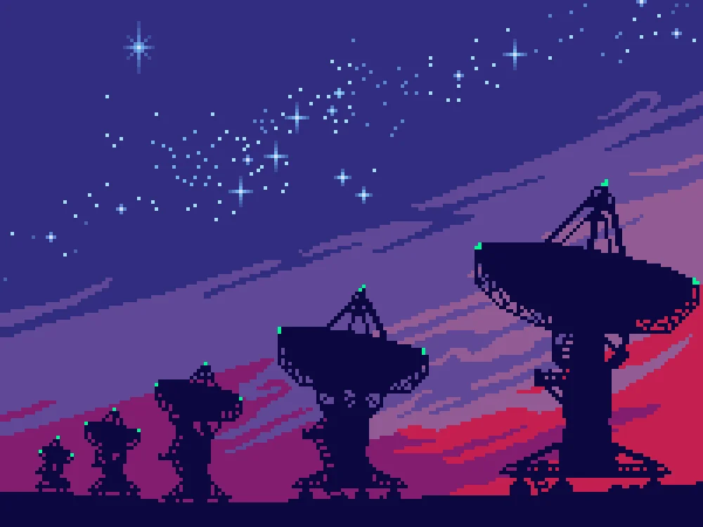
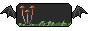
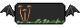

Welcome Web-Traveler!
Take a load off. Rest your legs, and enjoy all that I have to offer here. This site has been, and is being, crafted by myself in order to share the things that I find interesting. Enter at your own peril! Verbosity is a weakness of mine, and I'm told, a danger to others.
News
- 2025 - Jan 23rd A new article all about arrays...hooray! 🕮 Read now 🕮
- 2025 - Jan 21st A lone server in the expanse of space boots up. Lights blinking away, an old fan starts whirring. This site is born from within the depths of ancient silicon.
Some of My Favorite Sites
 
